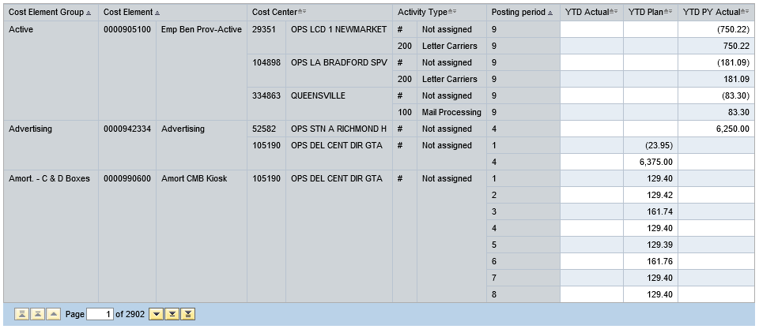

The dollars used in the DLM are retrieved from a custom BW query which relies on the 9000 report data cube.
The DLM uses the Cost Element and Debited Act Type found in the 9000 to map the dollar entries
to
Time Group (Dollars),
Act Type Group,
GLCE Group (Dollars) and to split them into
hours and non-hours related.
This query is ran a single time, but yields each fiscal year (DLM notation):
Current Year (TY - This Year)
Previous Year (LY - Last Year)
The query also yields the plan in dollars, which is utilized by the DLM for the variance to plan calculation.
The hours in the custom query are identical to those in the standard 9000 report.
The custom nature of the query provides a high level of detail necessary for the calculation.
The query pulls in the entirety of the GL (9000 report) for VP Operations. The DLM determines which of these are labour
related and non labour related, since only labour related hours are of interest for the DLM (see GLCE Group (Dollars)
methodology).
The adjustments are filterable by:
Output of BW Query [Z1_ZHOUYAN_DLM_9000_Cost_Driver]
